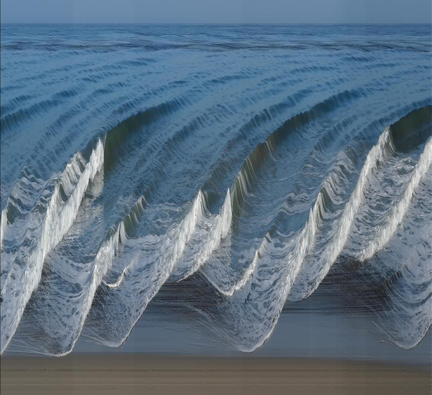

I unwrapped my face with a video camera and computer code.
{kind=link}
What?
I wrote a Python program that stitches the center column of pixels from a video into a single image. If the subject slowly spins around in a chair, the output image is a flat scan of their face. The setup is essentially acting like a photocopier, but the subject is spinning instead of the scanner moving.
Why?
My friend Mike Keesling (Instagram, Flickr) inspired me several years ago with some of his slit-scan photo art.
Here is my first face-scan attempt from 2013 after talking to Mike about his above picture:
|  |
| Mike Keesling beach slit scan |
{kind=link}
| Face Scan 2013 |
{kind=link}
Video
Filmed by cameramanjohn
Materials?
You need three things:
- Video camera
- Computer that can run Python and FFmpeg (download link below)
- Something to spin on
- Optional: Adobe After Effects to stabilize the image
Link contains everything except Python 3 (3.5.2 is what I did this on) and PIL (python imaging library)
Procedure
First we filmed a video of me spinning in the chair. Every frame of video adds a single column of pixels, so if you want a reasonably sized image you need about 1000 frames of video. We filmed at 60fps so my spin needed to last 16 seconds at the minimum.
Turns out, it's reallllly hard to keep perfectly steady while spinning around; this will cause uneven warping in the output image.
| Unstable spin |
{kind=link}
If you can't get a good spin but have access to video software which will let you animate the image position, try manually stabilizing the image with keyframes. I made some guide lines in After Effects and centered my face every 1/4 turn by lining my nose and ear up with said guide line.
| Stabilized spin |
{kind=link}
Not perfect, but it's wayyy better.
This is how you use the Python script:
- Install Python 3 (3.5.2) and PIL (python imaging library)
- Download the zipped folder above, and extract.
- Move your video to the 'video' folder
- Run the 'Face_Unwrap.py' script
Note_1... keep everything in that zip file together in the same folder.
Note_2... the code assumes you're filming a horizontal 1080p video
Code
from PIL import Image
import glob, os
for invideo in glob.glob("video\*"):
os.system('ffmpeg.exe -i ' + invideo +' -filter:v "crop=2:1080:960:1" -q:v 1 temp/images-%04d.jpeg')
print("frames extracted")
im_sequence = glob.glob("temp\*.jpeg")
im_size = (len(im_sequence), 1080)
composite = Image.new("RGB", im_size)
pix_col = 0
for infile in im_sequence:
file, ext = os.path.splitext(infile)
im = Image.open(infile)
im_center = 1920 / 2
im_strip = im.crop( (0, 0, 1, 1080) )
composite.paste(im_strip, (pix_col, 0))
pix_col += 1
im.close()
os.remove(infile)
print(file)
composite.save("unwrapped.jpeg", "JPEG")
print("done")
Explanation
Python tells FFmpeg to strip a 2x1080 strip of pixels starting halfway through each frame of the video. You only really want a 1x1080 strip, but that doesn't work for some reason. Then each of those thin images is saved into the '/temp' folder. This might take 10's of seconds to a couple minutes depending on how big the video is and how slow your computer is.
Python then creates a new blank image to stitch all the strips together. Since the temporary strips are actually two pixels wide, we need to specify the first column.
Once all the strips are stitched into the final image, Python saves it back into the folder and deletes the temporary strips!
Results
| Successful stitch |
{kind=link}
| World's Best Wrapping Paper |
{kind=link}
Unfortunately cameramanjohn is partially colorblind so it looks like I've got Jaundice.
| It fit the cheese puff container perfectly |
{kind=link}
The end
my house burned down so I don't have the wrapping paper anymore :(
Bonus
I changed the script to swap the image x-axis with time, so the first frame of the new video is a scan line image of the far left of the original video and the last frame of new video is a scan line image of the far right.
rip
ReplyDeleteYou duh man, stan!
ReplyDeleteBees
ReplyDeleteCan I get the text editor from 3:43 that has a buy bitcoin keyboard shortcut?
ReplyDeleteThis comment has been removed by the author.
ReplyDeleteI would have used pillow instead of PIL, because PIL has been deprecated I think...
ReplyDeleteIt doesn't seem to be doing anything, will it still work or am I just being stupid?
ReplyDelete